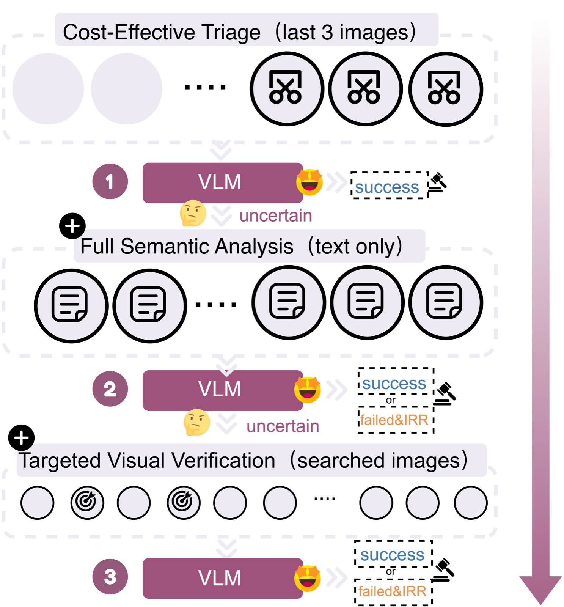
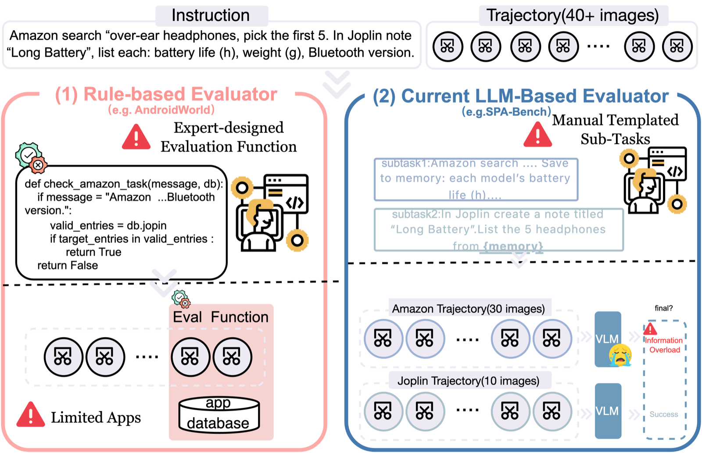
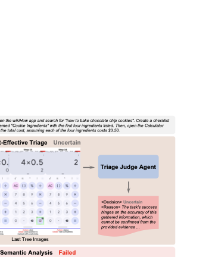
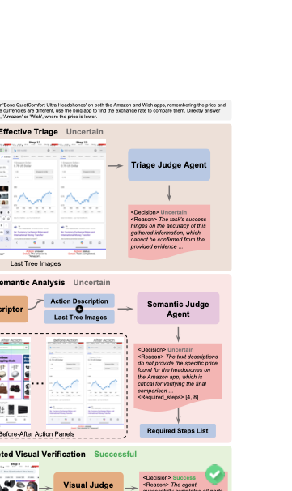
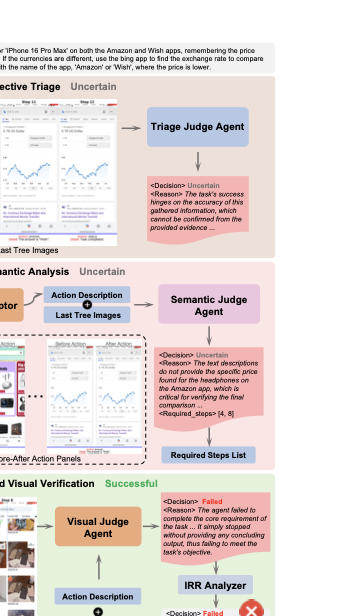
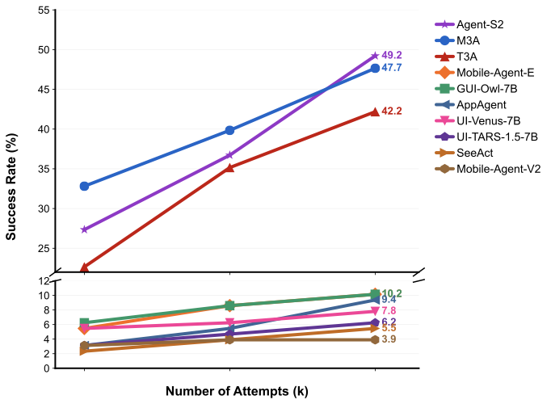

Pipeline Overview
MemGUI-Eval employs a novel "Progressive Scrutiny" pipeline that mimics efficient human expert verification: starting with minimal, high-efficiency evidence and progressively deepening analysis only when necessary.
{kind=link}

MemGUI-Eval Three-Stage Progressive Scrutiny Pipeline
The pipeline orchestrates four specialized agents: Triage Judge, Step Descriptor, Semantic Judge, and Visual Judge.
Comparison with Existing Approaches
{kind=link}

Limitations of Existing Evaluation Approaches
Traditional methods range from rigid rule-based matching to inefficient "LLM-as-Judge" approaches that overwhelm models with complete trajectories.
Stage-by-Stage Examples
Stage 1 Cost-Effective Triage
Rapidly processes straightforward successful cases using minimal evidence: task goal, raw action logs, and final three screenshots. Adopts an extremely conservative strategy, concluding "success" only when evidence irrefutably demonstrates task completion.
{kind=link}
Stage 2 Full Semantic Analysis
When triage proves inconclusive, the system conducts comprehensive semantic analysis with enriched evidence. The Step Descriptor generates detailed textual descriptions for every step, and the Semantic Judge synthesizes all context.
{kind=link}
Stage 2: Success Case
Semantic analysis with enriched textual descriptions enables accurate judgment.
{kind=link}

Stage 2: Failed Case with IRR
Semantic analysis determines task failure and computes Information Retention Rate (IRR).
Stage 3 Targeted Visual Verification
The core innovation: rather than overwhelming the model with all historical screenshots,
we provide precisely the visual evidence it actively requested via the required_steps list.
{kind=link}

Stage 3: Success Case
Targeted visual verification with requested historical screenshots confirms task completion.
{kind=link}

Stage 3: Failed Case with IRR
Visual verification with targeted historical evidence determines task failure with precise IRR calculation.
Learning Potential Analysis
{kind=link}

Learning Potential Across Multiple Attempts
Analysis of how different GUI agents improve their performance across multiple attempts (pass@k evaluation).